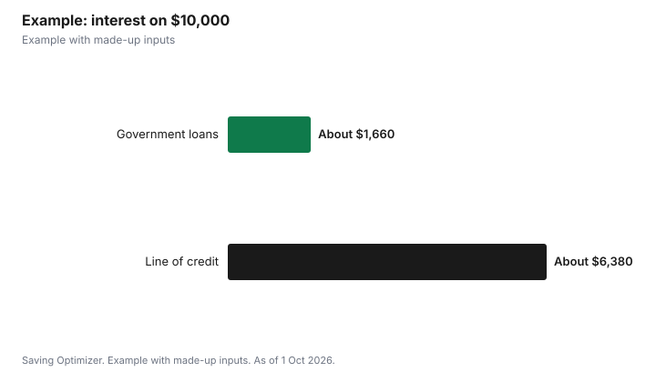

Education · Canada
Student Line of Credit vs Government Student Loan in Canada
For most students, government student aid is cheaper than a bank student line of credit, so apply for it first and use a line of credit only to cover what aid does not. Since 1 April 2023, Canada Student Loans have accumulated no interest, and they come with a six-month non-repayment period after you finish school and access to the Repayment Assistance Plan. Some provincial portions still charge interest; the Ontario portion, for example, floats at prime plus 1%. A student line of credit charges interest on whatever you draw from the day you draw it, and you must pay at least that interest while you study. Its advantages are flexibility and, for some programs, a higher limit. Read the terms, including whether you need a co-signer.
Key takeaways
- Canada Student Loans: no interest since 1 April 2023, including loans in repayment.
- Provincial portions vary: Ontario's floats at prime plus 1%; BC, NL, Manitoba and New Brunswick portions carry no interest.
- Line of credit: interest on what you use, starting right away; interest payments required while studying.
- Government loans: 6-month non-repayment period and the Repayment Assistance Plan; lines of credit have neither.
- Lenders cannot make optional credit insurance a condition of approval.
- Example with made-up inputs: $10,000 borrowed each way.
How each one works
| Feature | Canada Student Loan (federal portion) | Student line of credit |
|---|---|---|
| Interest while studying | None | Yes, on the amount drawn |
| Payments while studying | None while enrolled full time | At least the interest |
| After you finish | 6-month non-repayment period | Interest-only period set by lender, usually 6 to 12 months per FCAC |
| Interest in repayment | None since 1 April 2023 | Variable rate set by lender |
| Hardship help | Repayment Assistance Plan | Lender's own options only |
| How much | Based on assessed need | Set by lender; may depend on program, school, credit and income; a co-signer may be required |
The provincial portion matters
Most full-time student aid combines a federal loan with a provincial one, and the provincial rules differ. The National Student Loans Service Centre lists the Ontario portion at a floating rate of prime plus 1% and notes a fixed rate is not available for it; it lists the Saskatchewan portion at floating prime. Portions in British Columbia, Newfoundland and Labrador, Manitoba and New Brunswick carry no interest, while Alberta loans use the CIBC prime rate. Students in provinces with interest-free portions get an especially good deal compared with a line of credit.
How student lines of credit work
The Financial Consumer Agency of Canada (FCAC) explains that a line of credit lets you borrow repeatedly up to a preset limit, and you pay interest only on what you use: with a $10,000 limit and $3,000 drawn, you pay interest on $3,000. You must pay at least the interest while studying. After graduation, most lenders allow interest-only payments for a grace period, usually 6 to 12 months, and then you repay principal and interest. You can apply at any time and must prove full-time or part-time enrolment at a recognized Canadian school. The limit can depend on your program, your school, your living costs, your credit history and your ability to repay, and you may need a parent or other co-signer, who becomes responsible for the debt if you cannot pay.
Terms differ by bank. TD's Student Line of Credit page, for example, says no co-signer is needed to apply, with co-signer requirements assessed case by case based on credit history, and that no principal payments are due until 24 months after you leave school, with interest-only payments while you study. TD also advertises a cash offer of $300, $550 or $1,000, depending on program, if you are approved by 31 October 2026, with conditions. A cash offer should not be the reason to borrow; compare the rate and terms first.
Insurance and your rights
Lenders may offer optional credit insurance on a student line of credit, which can cover payments in cases such as serious illness or job loss. FCAC says you do not have to buy it to be approved, and federally regulated lenders such as banks cannot add it without your express consent. You also have the right to a disclosure statement showing the interest rate and costs before you sign.
When a line of credit makes sense
- You applied for government aid and the assessed amount does not cover your costs.
- You do not qualify for government aid, for example because of family income, and have no other source.
- You are in a high-cost professional program where banks offer larger limits.
- You need a short bridge, such as covering a term before aid arrives, and can repay soon.
- You can pay at least the interest every month while studying.
Example with made-up inputs
These numbers are an example with made-up inputs. Jordan, in Ontario, needs $10,000 over four years. Suppose half comes as a federal loan and half as an Ontario loan, and that interest on the Ontario half averages a made-up 6% from the start of repayment. With a 10-year repayment, the federal $5,000 costs no interest, and the Ontario $5,000 costs about $1,660 in interest, for total interest of about $1,660. If instead Jordan draws $10,000 on a line of credit at a made-up 7%, $2,500 a year, paying interest only while in school and for one year after, interest during those five years is about $2,450. Repaying $10,000 over the next 10 years at 7% adds about $3,930. Total interest is about $6,380.
| Borrowing | Interest while in school and grace | Interest in repayment | Total interest |
|---|---|---|---|
| Federal and Ontario student loans | $0 (example assumes none) | About $1,660 | About $1,660 |
| Student line of credit at 7% | About $2,450 | About $3,930 | About $6,380 |
The example ignores interest that may accrue on a provincial portion during the non-repayment period and assumes rates stay constant; real rates float with prime. It still shows why government aid usually costs less.

Steps
- Apply for government student aid every year, even if you think you will not qualify.
- Add up grants, loans, savings, RESP withdrawals and work income.
- Borrow only the gap on a line of credit, and draw it as needed rather than all at once.
- Compare rates, co-signer rules and grace periods at two or three lenders.
- Pay at least the interest monthly while studying, and more if you can.
- After graduation, repay the line of credit first if its rate is higher than your provincial loan.
Common mistakes
- Using a line of credit instead of applying for interest-free aid.
- Drawing the full limit at the start of the year.
- Forgetting that interest starts on the day you draw.
- Buying optional insurance without reading what it covers.
- Missing interest payments while in school, which can hurt your credit.
Related: student loan repayment and RAP and co-signing a student loan.
Sources
- Financial Consumer Agency of Canada, Student lines of credit (updated 14 Oct 2025), canada.ca (Wayback copy), as of 1 Oct 2026.
- National Student Loans Service Centre, Things You Need to Know and Glossary, csnpe-nslsc.canada.ca, as of 1 Oct 2026. Provincial portion interest rules.
- TD Bank, TD Student Line of Credit, td.com, as of 1 Oct 2026. Cash offer requires approval by 31 Oct 2026; conditions apply.
- Rates, amounts and interest totals in the example are made-up inputs and rounded.
Frequently asked questions
Is a student line of credit better than OSAP or a government student loan?
Usually not. Canada Student Loans accumulate no interest since 1 April 2023 and include the Repayment Assistance Plan, while a line of credit charges interest from the day you draw.
Do Canada Student Loans charge interest?
No. Since 1 April 2023 the federal portion accumulates no interest, but some provincial portions do, such as Ontario's at prime plus 1%.
Do I have to make payments on a student line of credit while in school?
Yes. You must pay at least the interest while studying, according to FCAC.
How long is the grace period on a student line of credit?
It depends on the lender; FCAC says interest-only periods are usually 6 to 12 months after graduation. TD says no principal is due until 24 months after you leave school.
Do I need a co-signer for a student line of credit?
You may. Some lenders require one, and TD says it assesses co-signer needs case by case.
Does the Repayment Assistance Plan cover a line of credit?
No. RAP applies only to government student loans.
Researched and drafted with AI assistance and fact-checked against official Canadian sources. How we create content.
Disclosure: Saving Optimizer may earn a commission if a partner link is added later. No partnership is claimed on this page. Education only.